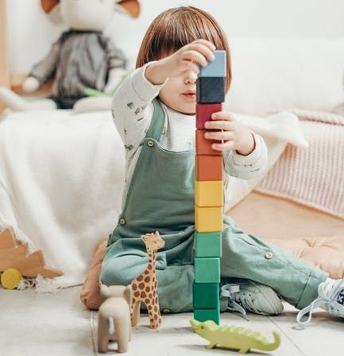

Durante este mes, David ha mostrado un progreso notable en su paciencia y manejo de emociones.
Participa activamente en las actividades del grupo y ha mejorado su capacidad para escuchar a los demás.
Ha desarrollado fuertes lazos con sus compañeros y disfruta liderar juegos.
En ocasiones, aún requiere apoyo para compartir juguetes y esperar su turno.
Acciones de seguimiento:
Continuar reforzando el concepto de compartir a través de dinámicas grupales.
Introducir más actividades de liderazgo para potenciar su confianza.
Seguir observando su interacción social para fortalecer su empatía.
Este mes, David comenzó a mostrar más independencia al realizar tareas como recoger sus materiales y ayudar a otros niños.
Sin embargo, ha tenido algunos momentos de frustración cuando no logra completar una actividad de manera rápida.
Ha desarrollado un mayor interés por las actividades artísticas, como el dibujo y la pintura, mostrando creatividad.
Acciones de seguimiento:
Implementar ejercicios de respiración para manejar la frustración.
Ofrecer refuerzo positivo cuando logre completar actividades por sí mismo.
Proporcionar más tiempo para actividades creativas.
Durante este mes, David mostró un comportamiento curioso y participativo.
Le gusta hacer preguntas sobre su entorno y disfruta de las actividades grupales,
especialmente las que implican juegos al aire libre.
Aunque es sociable, a veces se distrae fácilmente en actividades que requieren concentración,
como colorear o escuchar historias largas.
Acciones de seguimiento:
Fomentar la concentración mediante actividades cortas y dinámicas.
Reforzar su interés en la lectura con libros interactivos.
Promover el trabajo en equipo en juegos estructurados.